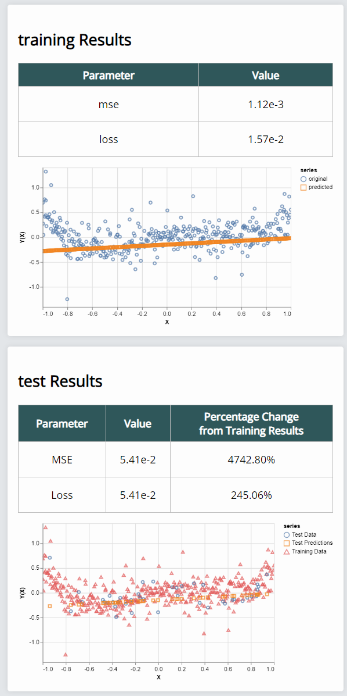
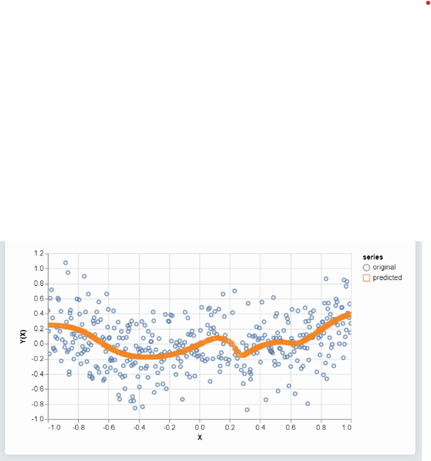
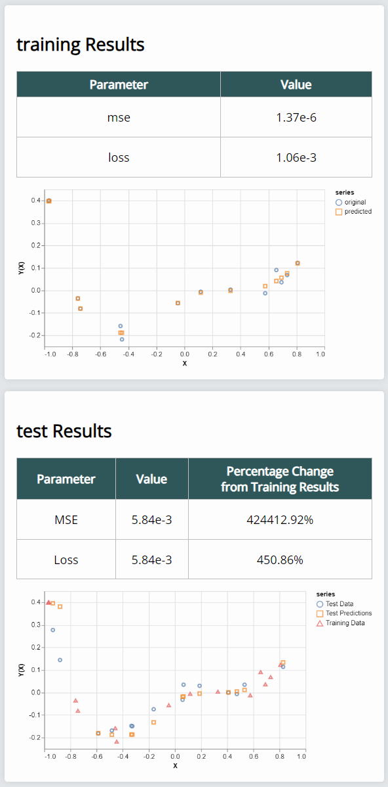
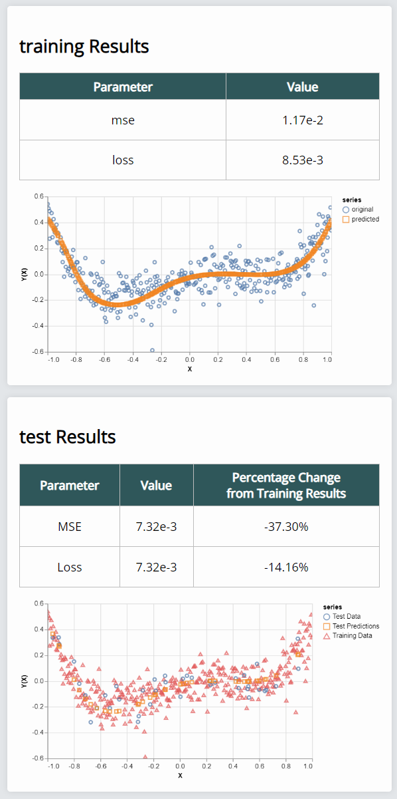

1) Underfitting
Bias (Verzerrung) ist der Fehler, der durch falsche Annahmen im Lernalgorithmus entsteht. Eine hohe Verzerrung kann einen Algorithmus dazu veranlassen, nicht die entsprechenden Beziehungen zwischen Eingabe und Ausgabe zu modellieren, was als Unteranpassung bezeichnet wird. Underfitting tritt auf, wenn ein Modell zu einfach ist und die zugrundeliegenden Muster in den Daten nicht erfasst. Ein unterangepasstes Modell berücksichtigt die Zusammenhänge bzw. “Signale” in den Daten nicht ausreichend. Es schafft es nicht, das Signal von dem Rauschen in den Daten zu trennen. Das führt dazu, dass weder die Daten noch die Realität genau genug beschrieben werden. Um ein Beispiel dafür zu erzeugen, habe ich ein einfachstes Modell (nur ein linear Layer) benutzt, dass der Komplexität der Ausgangsfunktion natürlich nicht gewachsen ist.

2) Overfitting
Overfitting tritt auf, wenn ein Modell zu komplex ist und das Rauschen in den Daten erfasst, was zu einer schlechten Generalisierungsleistung führt. Ein überangepasstes Modell orientiert sich zu sehr an den gesehenen Daten und reagiert mit einer höheren Fehlerrate bei neuen Beobachtungen. Es berücksichtigt unnötigerweise zu viel "Rauschen". Dafür verwende ich sehr lange trainierte Modelle mit vielen Layern und Parametern. Im ersten Bild ist die Überanpassung deutlich zu erkennen, einzelne Datencluster führen zu einer Funktion hohen Komplexitätsgrades. Im zweiten Bild ist ebenfalls eine Überanpassung zu erkennen, die vereinzelten Datenpunkte des Trainingssets werden hier fast perfekt erreicht. Beim Tenten auf dem Testdatensatz kommt es dann aber zu sehr großen Abweichungen.


3) "perfect" fit
Die Abwägung zwischen Underfitting und Overfitting: Das Modell ist komplex genug, um den Komplexitätsgrad der Funktion ziemlich gut nachbilden zu können, aber nicht zu komplex, um sich auf einzelne Abweichungen im Trainingsdatensatz zu fokussieren. Das Testen mit dem Testdatensatz fällt ähnlich gut aus wie das Testen auf dem Trainingsdatensatz, und beide Male sehr gut. Ich habe hier vor allem mit verschiedensten Kombinationen aus sigmoid-Layern Erfolg gefunden. Besonders gut funktioniert es auch mit nicht verrauschten Daten, je stärker verrauscht wird, desto weniger Erfolg hatte ich damit, eine geschwungene Form der Predictionskurve zu erhalten; meist wurde entstand eine lineare Funktion, die sich erst nach sehr sehr langem Training rechts etwas anhob und es meist innerhalb von 10000 Iterationen nicht schaffte, sich auch links oder gar in der Mitte dem ursprünglichen Funktionsverlauf anzunähern. Das Modell beinhaltet drei sigmoid-Layer mit 8,4,3 Units und Bias und schließt mit einem softplus Layer mit einer Unit ab.
